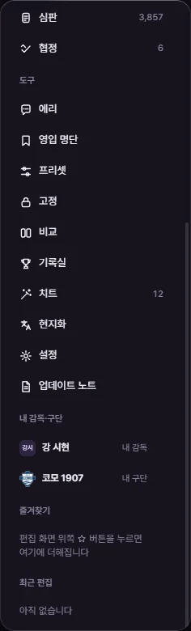
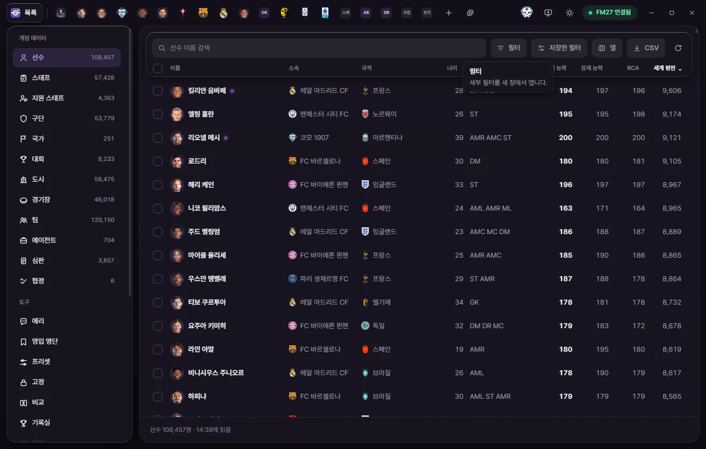

기본 사용법
화면 둘러보기
FMLE 창의 위쪽 탭 막대, 왼쪽 사이드바, 목록, 편집 탭, 아래쪽 막대가 각각 무엇인지 한 번에 정리했습니다.

FMLE 창은 네 부분으로 되어 있습니다.
- 위쪽 탭 막대: '목록' 단추, 열어 둔 편집 탭, 저장·연결 상태 같은 단추가 있습니다.
- 왼쪽 사이드바: 고칠 종류(선수, 구단 …)와 도구(치트, 고정 …)를 고릅니다. 목록 화면에서만 보입니다.
- 가운데: 사이드바에서 고른 목록이나 도구 화면, 또는 편집 탭이 보입니다.
- 아래쪽 막대: 목록의 개수와 고른 항목, 편집 탭의 저장 대기 같은 상태가 나옵니다.
위쪽 탭 막대
왼쪽부터 순서대로 있습니다.
| 단추 | 하는 일 |
|---|---|
| 목록 (FMLE 로고) | 목록 화면으로 돌아갑니다. 열어 둔 탭은 그대로 남습니다. |
| 열린 탭들 | 선수·구단 같은 대상 하나마다 탭이 하나씩 생깁니다. 눌러서 옮겨 다니고, 끌어서 순서를 바꿉니다. 탭이 많으면 얼굴이나 로고만 보이게 좁아집니다. 자세한 것은 탭과 빠른 열기에 있습니다. |
| + (탭으로 열기) | 이름으로 찾아 새 탭으로 엽니다. Ctrl+K와 같습니다. |
| 탭 모두 닫기 | 탭이 두 개 이상일 때만 + 옆에 생깁니다. 열린 탭을 모두 닫고 목록으로 돌아갑니다. Ctrl+Shift+W |
| 저장 (숫자) | 아직 게임에 쓰지 않은 값이 있을 때만 생깁니다. 숫자는 모든 탭에서 바꾼 값의 개수입니다. 누르면 모든 탭의 값을 한 번에 게임에 씁니다. Ctrl+S (값이 게임에 들어가는 때) |
| 고정 (숫자) | 고정한 값이 있을 때만 생깁니다. '고정 3', 멈춰 있으면 '고정 3 · 멈춤'처럼 보입니다. 누르면 고정 화면으로 갑니다. |
| 에리 (얼굴) | AI 분석관 에리의 대화창을 열고 닫습니다. Ctrl+J |
| 게임 화면 열기 (모니터) | 게임에서 지금 보고 있는 선수·스태프·구단·팀 화면을 FMLE 탭으로 엽니다. 게임 값은 건드리지 않습니다. Ctrl+G |
| 테마 (달·해) | 다크 모드와 라이트 모드를 바꿉니다. |
| 연결 표시 | 게임과 연결된 상태를 보여 줍니다. 누르면 연결 상태 창이 열립니다(아래). |
| 최소화·최대화·닫기 | 창 단추입니다. 탭 막대의 빈 곳을 끌면 창이 움직이고, 두 번 누르면 최대화됩니다. |
게임 화면 열기를 눌렀을 때 게임이 대회·국가·경기 화면처럼 FMLE가 열 수 없는 화면을 보고 있으면 '열 수 있는 화면이 아닙니다'라고 알립니다. 게임에서 선수·스태프·구단·팀 화면을 연 뒤 다시 누르세요.
연결 표시
FMLE는 5초마다 게임이 켜져 있는지 확인하고, 그 상태를 연결 표시에 보여 줍니다.
| 표시 | 뜻 |
|---|---|
| FM27 연결됨 | 게임과 연결되어 값을 읽고 쓸 수 있습니다. |
| 읽는 중 (%) | 세이브를 처음 한 번 읽는 중입니다. 다 읽으면 그다음부터는 목록과 탭이 기다림 없이 열립니다. |
| 세이브 대기 | 게임은 켜져 있지만 세이브를 아직 불러오지 않았습니다. 불러오면 자동으로 읽습니다. |
| FM27 시작 중 | 게임이 켜지는 중입니다. 메인 메뉴까지 뜨면 자동으로 연결됩니다. |
| FM27 꺼짐 | 게임이 꺼져 있습니다. 게임을 켜고 세이브를 불러오면 자동으로 연결됩니다. |
| 버전 다름 | FMLE가 지원하는 게임 버전이 아닙니다. 이때는 사이드바 아래에도 '다른 게임 버전' 안내가 나옵니다. |
| 열 수 없음 | 게임을 관리자 권한으로 실행했다면 FMLE도 관리자 권한으로 실행해 주세요. |
| 오류 | 게임을 읽다가 문제가 생겼습니다. 잠시 뒤 다시 시도해 주세요. |
| 확인 중 | FMLE가 막 켜져서 게임을 찾고 있습니다. |

연결 상태 창에는 다음이 나옵니다.
- 이 세이브: FMLE가 알아본 지금 세이브의 이름입니다. 한 번도 저장하지 않은 새 게임은 '저장 전 새 게임'으로 나옵니다(세이브마다 따로 기억하는 것).
- 게임 버전: FMLE가 읽는 게임 버전입니다.
- 종류마다 읽은 개수와 읽은 시각(예: 선수 108,457명 · 14:38).
- 쓰기: '읽은 값이 그대로일 때만'은 게임 값이 FMLE가 읽은 값과 같을 때만 쓴다는 뜻입니다(값이 게임에 들어가는 때).
- 게임에서 다시 읽기 단추(연결되지 않았을 때는 '다시 확인'): 모든 목록과 열린 탭을 게임에서 다시 읽습니다.
- 개발자 기록 저장·복사: 불러오기가 안 될 때 개발자에게 보낼 기록을 다운로드 폴더에 저장하거나 복사합니다.
테마
테마 단추를 누를 때마다 다크 모드와 라이트 모드가 바뀝니다. 처음에는 Windows 설정을 따르고, 한 번 고르면 FMLE를 다시 켜도 그대로입니다. 필터 창처럼 따로 뜨는 창도 같은 테마로 바뀝니다. 창의 막대와 패널을 유리처럼 비치게 하는 '유리 효과'는 설정에 있습니다.
왼쪽 사이드바


게임 데이터
선수, 스태프, 지원 스태프, 구단, 국가, 대회, 도시, 경기장, 팀, 에이전트, 심판, 협정의 목록입니다. 이름 옆 숫자는 게임에서 읽은 개수입니다. 누르면 오른쪽에 그 목록이 나옵니다(목록 쓰기).
언어는 사이드바에 없습니다. Ctrl+K로 언어 이름을 찾아 탭으로 엽니다.
도구
| 도구 | 하는 일 |
|---|---|
| 에리 | AI 분석관에게 묻고 영입 후보·할 일을 카드로 받습니다. 에리 |
| 영입 명단 | 선수·스태프를 이름 붙은 명단으로 모으고 게임의 영입 명단 파일로 주고받습니다. 영입 명단 |
| 프리셋 | 여러 값을 한 번에 바꾸는 묶음을 만들고 관리합니다. 프리셋 |
| 고정 | 게임이 값을 바꿔도 다시 돌려놓을 값을 관리합니다. 옆 숫자는 고정한 값의 개수입니다. 고정 |
| 비교 | 같은 종류의 탭 두 개를 나란히 봅니다. 비교 |
| 기록실 | 시즌 기록과 통계를 봅니다. 통계·선수 카드·기록실 |
| 치트 | 켜 두면 계속 지키는 기능들입니다. 켜져 있으면 옆에 켠 치트 수가 나옵니다. 치트 |
| 현지화 | 생성선수 이름을 한국어로 바꿉니다. 현지화 |
| 설정 | FMLE 설정입니다. 설정과 업데이트 노트 |
| 업데이트 노트 | 판마다 바뀐 것을 봅니다. 설정과 업데이트 노트 |
내 감독·구단
게임에 사람이 조종하는 감독이 있으면 보입니다. '내 감독'을 누르면 내 감독 탭이, '내 구단'을 누르면 그 감독의 구단 탭이 열립니다. 무직이면 '무직'이라고 붙고 구단 줄은 없습니다.
온라인 게임처럼 사람 감독이 여러 명이면 모두 '사람 감독'으로 나오고, 맨 아래 내 감독 고르기(고른 뒤에는 내 감독 바꾸기)가 생깁니다. 여기서 고른 사람이 ⚡ 게임 에디터의 '내 구단으로' 기능과 치트의 '내 감독 옵션'에 쓰입니다.
즐겨찾기
편집 탭 위쪽의 별 단추나 오른쪽 클릭 메뉴로 넣은 대상입니다. 누르면 탭이 열리고, 줄 오른쪽 ×로 뺍니다. 세이브마다 따로 기억합니다(탭과 빠른 열기).
최근 편집
이번에 FMLE를 켠 뒤 게임에 쓴 값이 최근 것부터 6개까지 나옵니다(예: '리오넬 메시 크로스 19 → 20'). 누르면 그 대상의 탭이 열립니다. 게임에서 다른 세이브를 열면 비워집니다. FMLE를 다시 켜면 남아 있지 않습니다.
가운데: 목록과 도구 화면
사이드바에서 게임 데이터를 고르면 목록이, 도구를 고르면 그 도구 화면이 나옵니다. 목록 위에는 검색창, 필터, 저장한 필터, 열, CSV, 다시 읽기, 사용법(?) 단추가 있습니다. 자세한 것은 목록 쓰기에 있습니다.
'?'(사용법) 단추와 F1은 지금 보고 있는 화면의 위키 페이지를 브라우저로 엽니다. 목록 위, 편집 탭 위, 도구 화면 머리에 있습니다. 설정과 업데이트 노트에는 '사용법 위키' 단추가 있어 위키 첫 페이지를 엽니다.
FMLE를 끄고 다시 켜면 마지막으로 보던 사이드바 항목과 열어 둔 탭이 그대로 돌아옵니다.
편집 탭

머리
- 얼굴·로고와 이름. 그래픽 팩이 있으면 얼굴이나 로고가, 없으면 이름 머리글자가 보입니다. 구단은 구단 색으로 칠해집니다. 여자 구단과 그 팀은 이름이 다른 색으로 보입니다.
- 이름 아래 줄. 맨 앞의 숫자는 고유번호입니다. 누르면 복사합니다. 생성선수는
r-가 붙습니다(예:r-12345). 그 뒤로 소속·국적·주 포지션, 임대 중이면 '임대 · 원소속 구단', 생일(나이)이 이어집니다. 밑줄 친 이름을 누르면 그 대상의 탭이 열립니다. - 다음 이적이 정해져 있으면 '이적 예정 · 구단 · 날짜 · 이적료', 은퇴가 정해져 있으면 '은퇴 예정 · 날짜'가 나옵니다.
- 숫자 카드. 선수는 현재 능력(CA), 잠재 능력(PA), 추천 현재 능력(RCA)이 보입니다. 고칠 수 있는 카드는 눌러서 숫자를 바로 적습니다. Enter나 다른 곳을 누르면 그 값으로, Esc는 원래 값으로 돌아갑니다. 바꾼 값은 '저장'을 눌러야 게임에 들어갑니다.
- 추천 현재 능력이 현재 능력과 다르면 그 카드에 CA를 이 값으로 단추가 생깁니다. 누르면 현재 능력을 추천 현재 능력과 같게 바꿉니다(저장해야 들어갑니다).
- 설정에서 '선수 화면에 능력치 효율 보이기'를 켜면 능력치 효율 카드도 나옵니다.
머리 오른쪽 단추
| 단추 | 하는 일 |
|---|---|
| ⚡ 게임 에디터 기능 | 이적·임대·부상·계약 같은 게임 에디터 기능 메뉴를 엽니다. 선수, 스태프, 팀, 구단, 내 감독 탭에만 있습니다. 확인하면 게임에 바로 반영됩니다. 게임 에디터 |
| 프리셋 적용 | 고른 프리셋의 값을 이 탭에 채웁니다. 바뀐 값을 확인한 뒤 '저장'을 눌러야 들어갑니다. 프리셋 |
| 고정 | 고정 화면에서 고른 값을 지금 값으로 고정합니다. 다시 누르면 풉니다. 고정 |
| 즐겨찾기 (별) | 사이드바 즐겨찾기에 넣거나 뺍니다. |
| 비교 | 같은 종류의 다른 탭과 값을 나란히 봅니다. 비교 |
| 게임에서 다시 읽기 | 이 대상만 게임에서 다시 읽습니다. 저장하지 않은 값은 남겨 두고, 새로 읽은 값과 비교합니다. |
| ? 사용법 | 이 탭 종류의 위키 페이지를 엽니다. F1 |
왼쪽 하위 페이지
능력치, 포지션, 정보, 계약·이적처럼 종류마다 페이지가 나뉘어 있습니다. 누르거나 ↑ ↓로 옮깁니다. 페이지마다 무엇이 있는지는 선수, 구단 같은 편집 탭 페이지에 있습니다.
맨 아래에는 '선수 · 고유번호 7458500'처럼 종류와 고유번호, 그리고 읽은 상태가 나옵니다.
| 표시 | 뜻 |
|---|---|
| 게임에서 읽음 · 14:38 | 그 시각에 게임에서 읽은 값입니다. |
| 마지막으로 읽은 값 · 14:38 | 게임 연결이 끊겼거나 세이브가 바뀌어서 지금 게임 값과 다를 수 있습니다. 이 상태에서는 값을 고치거나 저장할 수 없습니다. 다시 읽어 주세요. |
| 읽는 중 | 게임에서 읽고 있습니다. |
| 읽지 못함 | 게임에서 이 대상을 찾지 못했거나 읽지 못했습니다. 가운데에 이유와 '다시 읽기' 단추가 나옵니다. |
아래쪽 막대
- 목록 아래: '선수 108,457명 · 14:38에 읽음'처럼 개수와 읽은 시각이 나옵니다. 검색이나 필터를 쓰면 '선수 108,457명 중 120명', 줄을 고르면 '· 3명 선택'이 붙고 오른쪽에 고른 것에 쓸 단추가 생깁니다(목록 쓰기).
- 편집 탭 아래: 값을 바꾸면 '바꾼 값 2개 · 크로스 19→20, …' 막대와 '되돌리기'·'저장' 단추가 나옵니다(값이 게임에 들어가는 때).
- 구단 탭의 선수단·스태프 표에서 여러 명을 고르면 '3명 골랐습니다' 막대가 나옵니다(탭과 빠른 열기).
일을 마치거나 문제가 생기면 창 아래쪽 가운데에 짧은 알림이 잠깐 뜹니다. '다시 열기', '되돌리기', '폴더에서 보기'처럼 단추가 붙은 알림은 조금 더 오래 떠 있습니다.
도움말 말풍선
단추나 칸 위에 마우스를 0.25초쯤 올려 두면 이름과 설명이 뜹니다. 단축키가 있으면 키 모양으로, 게임에 바로 쓰는 단추는 '게임에 바로 씁니다', 저장해야 하는 단추는 '저장을 눌러야 게임에 들어갑니다'라는 색 줄로 알려 줍니다. 칸 이름 옆의 ⓘ 표시에 올리면 그 칸의 설명이 나옵니다.


시작 화면
FMLE를 켜면 로고와 함께 'FMLE 준비 → 게임 찾기 → 게임 읽기' 세 단계가 나옵니다. 기다리기 싫으면 기다리지 않고 들어가기를 누르세요. 읽기는 그대로 이어지고, 얼마나 읽었는지는 연결 표시에 나옵니다. 문제가 생기면 다시 시도, 기록 저장, 기록 복사, 그냥 들어가기 단추가 나옵니다. 문제를 풀 때는 문제가 생겼을 때를 보세요.